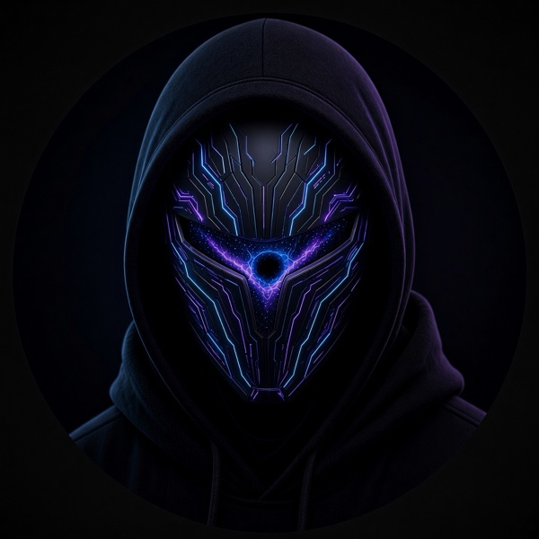

llmops-infra-guide
An LLM drafts a Dockerfile, docker build validates it, and the build errors feed the next attempt. A generate-and-validate loop with documented samples for Flask, Node.js and Go.
- LLMOps
- Docker
- Python
- Node.js
- Go
IT support and systems · AI workflow automation · Cloud
More than four years on an enterprise service desk taught me to find the failure people can’t see. Now I build AI workflows and cloud tooling where the agents draft and test the work, and nothing ships under my name until I approve it.
Live counts unavailable right now. See the pull requests below.
Pulled live from GitHub. Every fix includes a test.
Proof over claims. Each card links to the code or the pull request.
An LLM drafts a Dockerfile, docker build validates it, and the build errors feed the next attempt. A generate-and-validate loop with documented samples for Flask, Node.js and Go.
When the commit lookup failed, the updater said “up to date”. It now reports drift, and a test stubs the failed lookup.
Detects project-scoped Playwright MCP installs, with precedence-aware config resolution and regression tests.
Hardens context-budget prompt assembly and tracker-path handling.
Stored logo URLs resolve with the current client ID, so rotating the ID repairs existing logos without a data backfill.
New untitled buffers inherit the editor’s insertSpaces and tabSize settings, verified against the built binary.
The unack sweep stays scheduled after a failed run, so a dropped database connection no longer strands workflows until restart.
frame "#selector" resolves cross-origin iframes. The maintainer folded my fix from #2549 into #2737 with the other iframe targeting fixes and credited me as co-author.
Private projects in progress. Happy to walk through them in an interview.
Agents handle intake, triage and first-line remediation. A fix that fails review gets up to three examined fixes before the ticket escalates to a technician, and privileged actions such as password resets need a human approver.
Halt a run, preserve its session, and review the report every run produces. Any run can be handed to a person at the same step.


The operating model borrows from IT service management: clear tickets, clear owners, and a person who signs off.
I brief a personal agent, a lead splits the work across specialists, and results come back to me for approval before anything is finished.
Every task starts as a written brief with scope, done criteria and what is off limits.
Build, test, security review and writing each go to the specialist suited to them, checked independently. A summary from another agent is not evidence.
Pull requests, public posts and anything that spends money wait for my approval of the exact item. Approved work is then finished and verified.
On failure: what broke, the likely cause, what the next attempt changes. At most three, then it halts and escalates with the evidence.
Aug 2026 – Present
Mar 2022 – Aug 2026
Oct 2017 – Mar 2022
Mar 2016 – Oct 2017
Help desk and service desk, high-volume ticket queues, remote support, escalation management, root-cause analysis, knowledge-base writing
Windows, Windows Server, Active Directory, Microsoft Azure (hybrid), AWS, VMware, Docker, Cisco routers and switches, network diagnostics, telephony
Python, PowerShell, Bash, SQL, Node.js, C, Java, Git and GitHub, Playwright, CI/CD
Claude Code and Copilot CLI, among other tools; approval-gated agent workflows; LLM generate-and-validate loops; ServiceNow, Jira, Salesforce, Teams, Slack, Zoom
CompTIA A+ · Earned December 2023